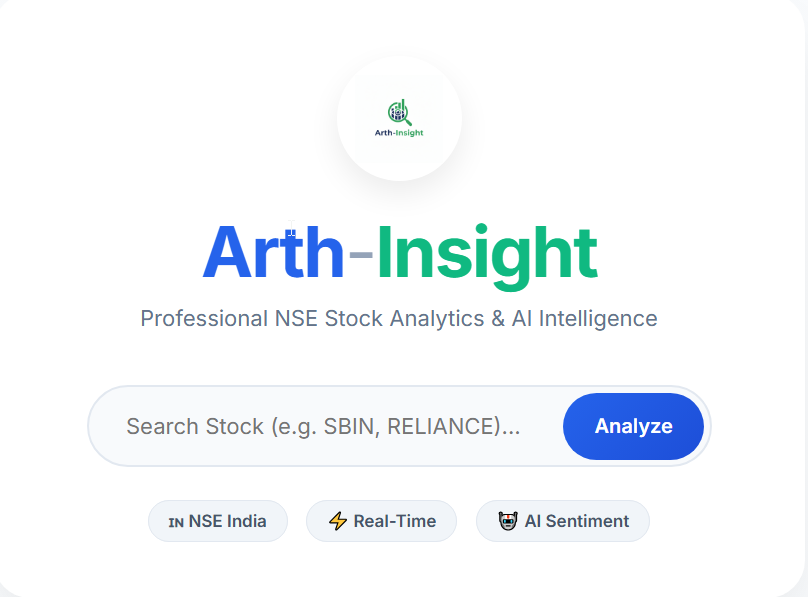
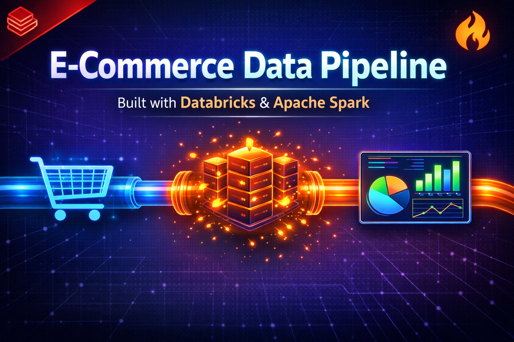
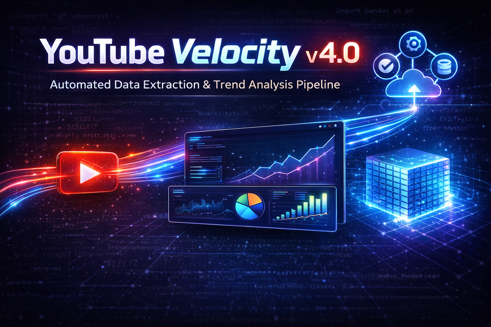

Beyond the Spreadsheet
As a hybrid Data Engineer and Analyst, I bridge the critical gap between raw infrastructure and strategic business decisions. With a solid foundation in Computer Applications (BCA), I don't just analyze data—I architect the end-to-end ecosystems that make analytics possible.
I specialize in owning the complete data lifecycle. On the engineering front, I build resilient, serverless pipelines and scalable lakehouse architectures using PySpark, Databricks, BigQuery, and Docker. On the analytics front, I translate those complex datasets into clear, actionable narratives using Python, advanced SQL, and Power BI, ensuring stakeholders can trust the numbers.
Beyond the technical stack—leveraging modern tools like dbt and GitHub Actions for CI/CD and orchestration—I bring strong domain awareness, particularly in financial analytics and market trends. I treat data as a strategic asset, engineering pipelines and deploying models with a singular focus: empowering businesses to operate smarter, faster, and with absolute clarity.
10+
Dashboards Created
10+
End-to-End Projects
Technical Arsenal
Tools and technologies I use to bring data to life.
Languages
Visualization
Engineering
Frameworks
Selected Work
Engineering pipelines and visualizing success.

Arth-Insight
A Financial Analytics Engine utilizing dbt for transformation, BigQuery for warehousing, and Docker for containerization.

E-Commerce Data Pipeline
In-Memory Lakehouse architecture processing transaction data with PySpark and Databricks.

YouTube Velocity v4.0
Automated data extraction and trend analysis pipeline using GitHub Actions and BigQuery.
Crypto Whale Tracker
Real-time streaming pipeline processing continuous Binance WebSocket trade data.
Project Details
- Real-Time Data Ingestion: Architected continuous ingestion connecting Binance WebSocket API via Redpanda to decouple downstream processing.
- Distributed Stream Processing: Engineered PySpark Structured Streaming for live topic consumption with tumbling 1-min windows to detect "whale" anomalies.
- Full-Stack Data Delivery: Integrated PostgreSQL with Django, utilizing Django Channels to push live upserts and alerts to a frontend UI.
- Infrastructure Optimization: Containerized via Docker Compose, designing hybrid-execution to run memory-intensive PySpark workloads natively, bypassing OOM restraints.
Supply Chain Control Tower
End-to-End automated Medallion Architecture pipeline navigating data extraction, processing, and cloud ingestion.
Project Details
- Pipeline Orchestration: Engineered Medallion Architecture (Bronze/Silver/Gold) orchestrated by Apache Airflow (TaskFlow API) to seamlessly manage data pipelines.
- Distributed Processing: Processed 180k+ records using PySpark & Delta Lake, avoiding OOM errors via tuned shuffle partitions.
- Cloud Data Modeling: Built Python/SQLAlchemy ingestion scripts to push Gold-layer data to Neon Serverless PostgreSQL and dbt models to resolve schema drift.
- Reliability & Security: Implemented Airflow sensors for readiness, Pytest for Spark data validation, and secured credentials management.

Business 360
Comprehensive Brick & Mortar and E-commerce dashboard offering 360-degree business insights.

Shield Insurance
Risk assessment and policy analysis dashboard empowering data-driven insurance strategies.

Good-cabs Analysis
Transport data analysis optimizing route efficiency and fleet allocation.
Ready to Collaborate?
Whether you have a question, a project idea, or just want to discuss the latest in Data Engineering, my inbox is always open.